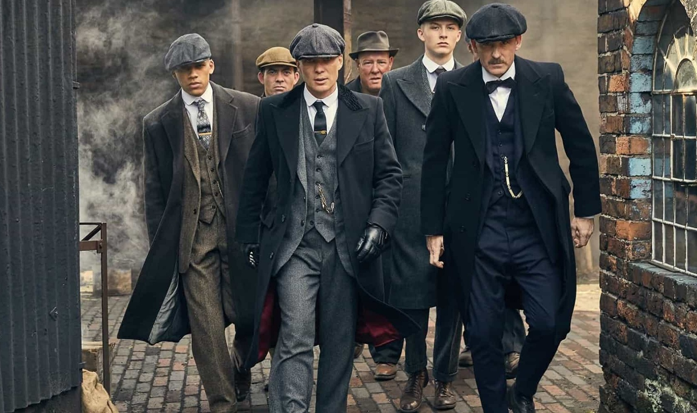
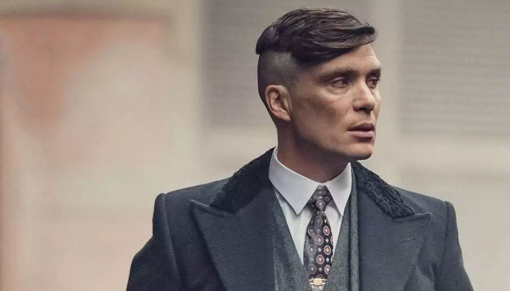
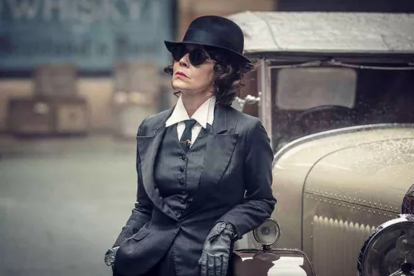

Peaky Blinders é uma série de televisão britânica de drama histórico criada por Steven Knight. A série é ambientada em Birmingham, Inglaterra, após a Primeira Guerra Mundial, e acompanha a família Shelby, que comanda uma gangue conhecida como os Peaky Blinders.
Tommy Shelby, interpretado por Cillian Murphy, é o líder dos Peaky Blinders. Ele é inteligente, implacável e ambicioso, e está sempre pensando em como expandir o império criminoso de sua família.
Polly Gray, interpretada por Helen McCrory, é a tia de Tommy e a gerente de finanças dos Peaky Blinders. Ela é inteligente, astuta e ferozmente leal à família Shelby.
